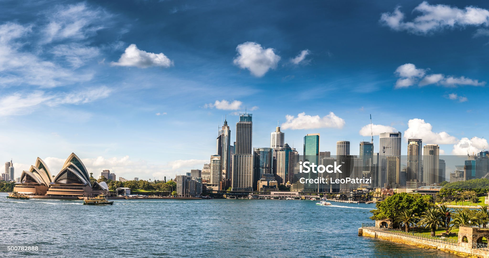
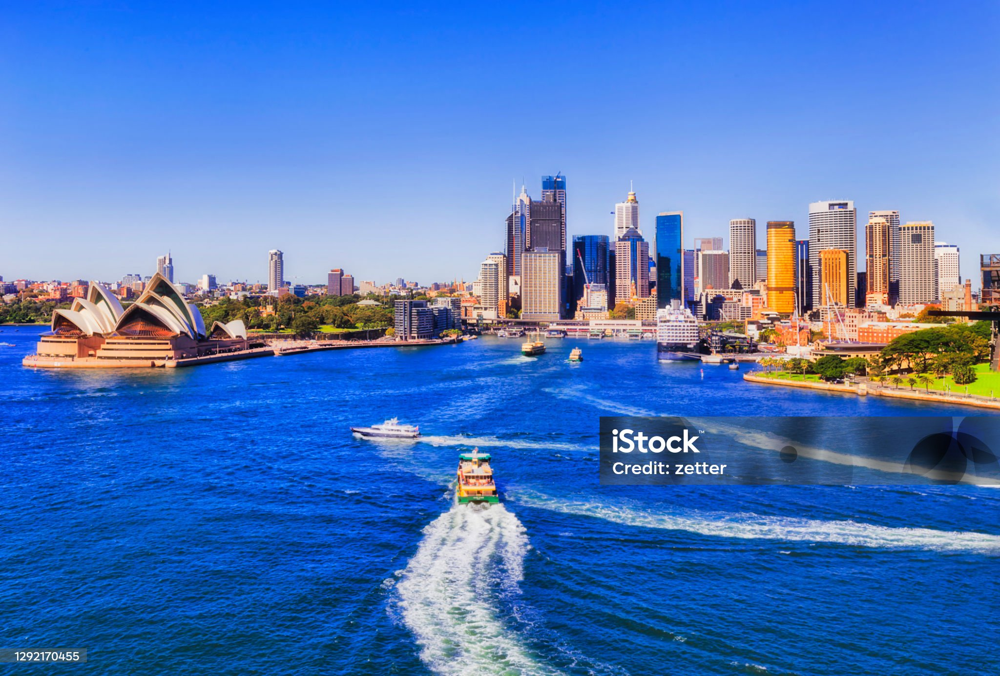

AUSTRALIA SYDNEY
Sydney is the capital city of the state of New South Wales and the most
populous city in Australia.
Located on Australia's east coast, the metropolis surrounds Sydney Harbour and extends about 80 km
(50 mi) from the Pacific Ocean in the east to the Blue Mountains in the west, and about 80 km (50
mi) from the Ku-ring-gai Chase National Park and the Hawkesbury River in the north and north-west,
to the Royal National Park and Macarthur in the south and south-west.[5] Greater Sydney consists of
658 suburbs, spread across 33 local government areas.

CITY SCAPE
From the first century A.D. dates a fresco at the Baths of Trajan in Rome depicting a bird's eye view
of an ancient city.[1] In the Middle Ages, cityscapes appeared as a background for portraits and
biblical themes. From the 16th up to the 18th century numerous copperplate prints and etchings were
made showing cities in bird's eye view. The function of these prints was to provide a map-like
over.In Ancient China, scroll paintings such as Along the River During the Qingming Festival
(Qingming
Shanghe Tu) offer a panoramic view of the cities depicted.

SYDNEY HARBOUR
The Sydney Harbour Bridge is a steel through arch bridge in Sydney, New South Wales, Australia,
spanning Sydney Harbour from the central business district (CBD) to the North Shore. The view of the
bridge, the harbour, and the nearby Sydney Opera House is widely regarded as an iconic image of
Sydney, and of Australia itself. Nicknamed "The Coathanger" because of its arch-based design, the
bridge carries rail, vehicular, bicycle and pedestrian traffic.[1][2]